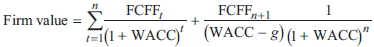
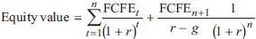

--------------------
FCF法
--------------------
- FCF适用条件
- 不支付股利或支付极少
- FCF与公司盈利能力相关
- FCF适用于控股股东. 尤其是并购时A对T使用, 因为收购后A成为控股方
- FCFE or FCFF
- 尽可能选用FCFE
- 资本结构变化大的时候用FCFF
- 债务大的时候用FCFF
- PV of FCF
- Vfirm = Σ FCFFt/(1+WACC)t
其中WACC=D/A×rd×(1-T)+E/A×re
- Vequity = Σ FCFEt/(1+r)t
其中r=股权要求回报率rre
- 计算FCFF
- FCFF = NI + NCC(一般用折旧代替) + Int(1-T) - FCInv - WCInv
- FCFF = CFO + Int(1-T) - FCInv
- NCC 加回处理
- 有利的减掉, 有损的加回
- 折旧
- 无形资产的摊销
- restructing charges
- G&L
- 长期债的折价或溢价摊销
- FCFF = EBIT(1-T) + dep折旧 - FCInv - WCInv
- FCFF = EBITDA(1-T) + dep折旧•T - FCInv - WCInv
- FCFF= Cash balance + Debt净还款 [Int(1-T) + New borrowing] + 股权净支付 [现金股利 + 回购]
- 计算FCFE
- NB
- NB = 新增借款 = 新的debt borrowing - debt 偿还
- NB = △Debt = △Asset × DR(debt ratio)
- FCFE= FCFF - Inv(1-T) + Net Borrowing, NB
- FCFE = NI + NCC - FCInv - WCInv + Net Borrowing
- FCFE = CFO - FCInv + Net Borrowing
- FCFF= Cash balance + 股权净支付 [现金股利 + 回购]
- FCFE = NI - (FCInv - Dep) - WCInv + DR × (FCInv - Dep + WCInv)
= NI - (1-DR) × (FCInv - Dep + WCInv)
- 敏感性分析
- 一个阶段的FCFF和FCFE
- Vfirm = FCFF1/(WACC-g) = FCFF0(1+g)/(WACC-g)
- Vequity = FCFE1/(r-g) = FCFE0(1+g)/(r-g)
- 两个阶段的FCFF和FCFE


- 两个阶段的FCF模型计算方法
- WACC或RRE
- Vn
- Vn,FCFF=FCFFn+1/(WACC-g)
- Vn,FCFE=FCFEn+1/(rre-g)
- V0
- V0,FCFF=Σ FCFFt/(1+WACC)t
- V0,FCFE=Σ FCFEt/(1+rre)t
- Vfirm = value of operating assets + value of nonoperating assets value should be added as well
--------------------
Next Chaptor